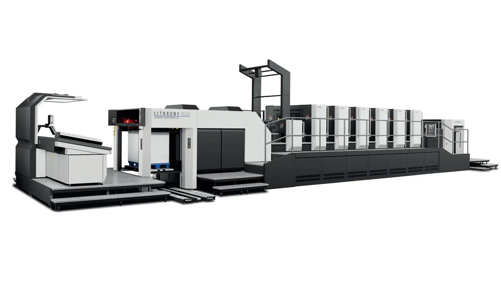

Cartonnages industriels · Bayonne
La fabriqued’une boîte.
Une feuille de carton, six encres et un vernis, une forme de découpe, un filet de colle. Faites défiler pour suivre la matière jusqu’à l’étui.
- 01Impression
- 02Découpe
- 03Pliage-collage
- 04L’étui
Faites défiler : l’impression commence
Toutes les boîtes pliantes
Une ligne, plusieurs boîtes.
La même chaîne d’impression, de découpe et de pliage-collage fabrique chaque type de boîte pliante. En voici quelques-uns.
01 Étui à patte collée
La patte latérale est collée au corps ; des rabats rentrants ferment le haut et le bas.
02 Étui à patte simple
Des rabats rentrants, retenus par de petites fentes, le ferment ; il se rouvre à la main.
03 Fond automatique
Le fond, collé à plat en usine, se forme et se verrouille dès qu’on ouvre l’étui.
04 Fourreau
Un manchon ouvert aux deux bouts, qui glisse autour d’une barquette ou d’un produit.
05 Boîte 4 points
Une barquette ouverte dont les quatre coins sont collés.
06 Boîte 6 points
La barquette reçoit un couvercle attenant ; elle est collée en six points.
Dessins schématiques, d’après les styles courants de boîtes pliantes. Types de boîtes cités par l’entreprise : étuis, fourreaux, 4 points, 6 points, fonds automatiques, bords collés, barquettes · cartonnages-larre.fr
Photographies de l’entreprise
L’atelier de Bayonne.
Quatre générations de cartonnage à Bayonne. Voici les machines qui font chaque étape. Voir le process industriel





Photographies publiées par l’entreprise · cartonnages-larre.fr